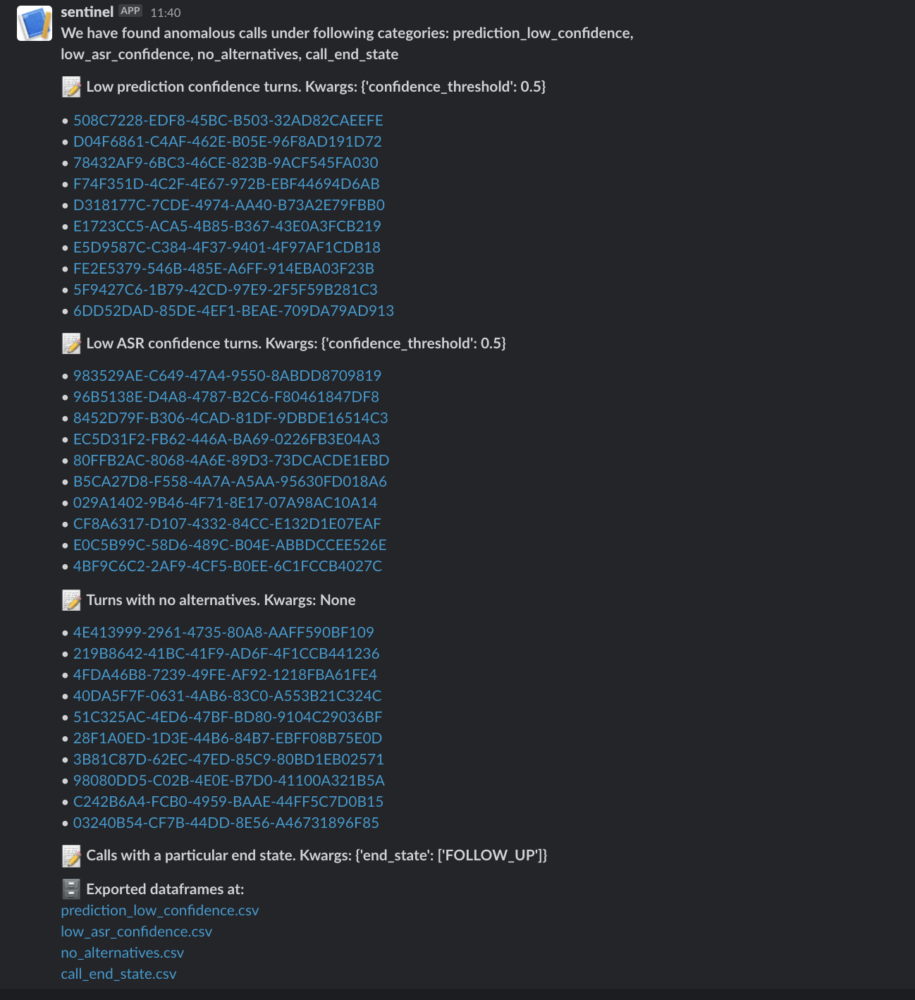

Sentinel


Sentinel is an anomalous call monitoring and filtering system which picks calls that are weird in some way or the other and push them to a daily report.
It works on calls/turn data as defined in dataframes that has standard datatype definitions.
Installation
pip install https://github.com/skit-ai/sentinel/releases/download/0.2.2/sentinel-0.2.2-py3-none-any.whl
Usage
To run sentinel against a dataframe, you need to first create a config file which has definition of the dataframe to use, filters to apply, reporting etc. More about config in the doc here
sentinel run --config-yml=config.yml
Based on the config for exporting report, you’ll get calls/turns in Slack or email.
To get the available filter functions do:
sentinel list
This will give a list of available filter names and their description like below:
Available filter functions:
+---------------------------+-----------------------------------+
| filters | description |
+---------------------------+-----------------------------------+
| no_alternatives | Turns with no alternatives |
| low_asr_confidence | Low ASR confidence turns |
| prediction_low_confidence | Low prediction confidence turns |
| call_end_state | Calls with a particular end state |
+---------------------------+-----------------------------------+
Reporting
Currently, sentinel supports exporting results on Slack.
Slack
Below is a screenshot of exports on Slack. 
…